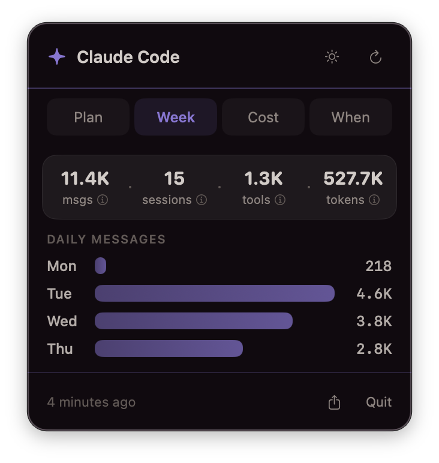
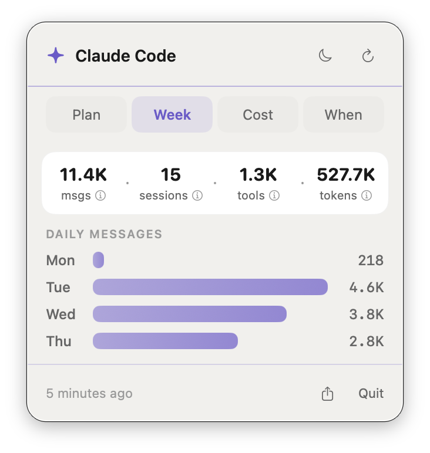
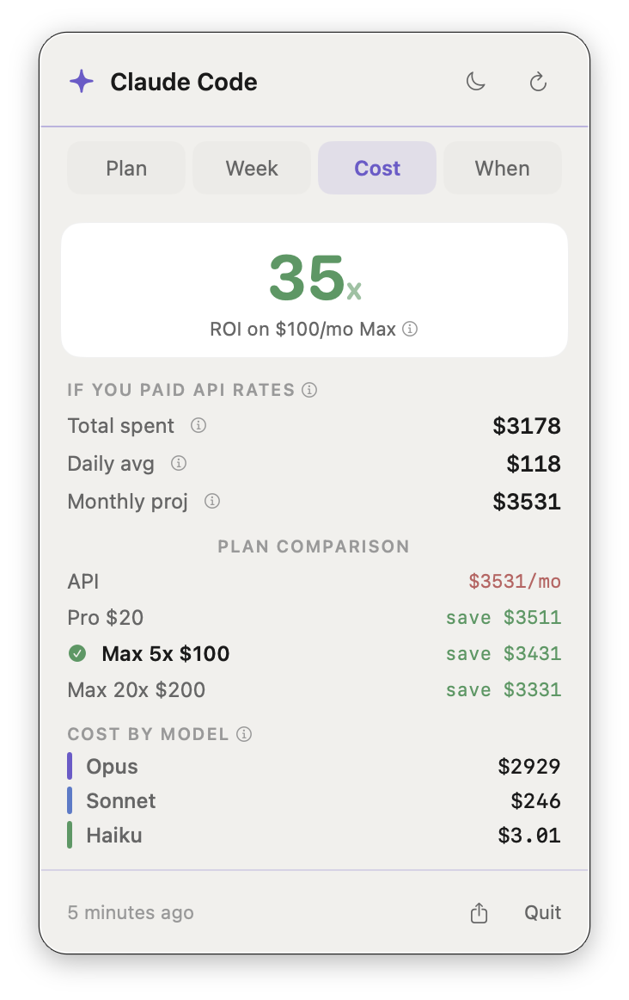
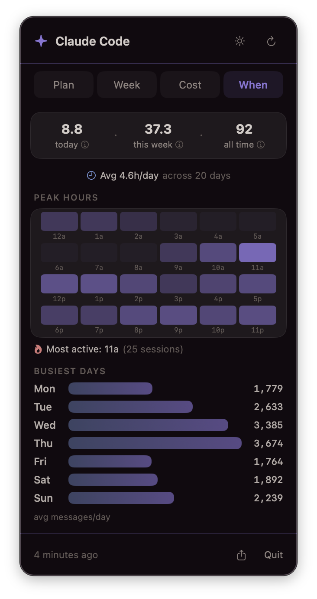

Weekly activity dashboard — dark and light modes. Same design system tokens, automatic theme switching.
About This Project
I built a macOS app to find out if using Claude is actually worth it. Not philosophically—financially. What would I have paid at API rates instead of a flat subscription?
ClaudeUsage is a native menu bar app that answers that. It hits an undocumented Anthropic API endpoint for plan usage, reads the local stats cache for token data, and applies current API pricing to calculate what everything would have cost. One click from the menu bar, four tabs.
The answer: $5,521 in 31 days tracked. Daily average: $178. My plan costs $100/month. That’s 53x.
I used Claude Code to build an app about Claude Code. The whole thing—UI, endpoint calls, caching layer, design system integration—took a few focused sessions. Swift/SwiftUI, not Electron. Same design tokens as stonerOS. Light and dark mode.
This demonstrates: native macOS development, API integration, data visualization, design system application, and the instinct to build a tool when the data is there but invisible.
Context
| Role | Self-initiated—designer, developer, user |
| Built | March 2026 |
| Status | Active daily use |
| Stack | Swift 6.0, SwiftUI, macOS 14+, Anthropic OAuth2 API, macOS Keychain |
| Repo | Private GitHub |
| Related | Built on top of stonerOS design system (case study 05) |
The Problem
I had a vague sense Claude was saving me time. I had no idea what “saving me time” was actually worth.
The data was there—Claude Code writes a stats cache file locally with token counts, model breakdowns, session timestamps. There’s an API endpoint for plan usage. There’s a history log with session timings. But nothing surfaced any of it anywhere useful. The Anthropic dashboard shows billing, not behavior.
I wanted to see how close I was to plan limits mid-session, what my week looked like, what it would cost at API rates, and when my peak hours were. So I built a window into it.
Design Approach
Menu bar app, not a full window. Click to check, close to keep working. Four tabs, each answering one question:
| Tab | Question | Data source |
|---|---|---|
| Limits | Am I near my plan cap? | Anthropic OAuth2 API (real-time) |
| Week | How active was my week? | Claude’s local stats cache |
| Cost | What would this cost at API rates? | Stats cache + published pricing model |
| When | When do I use it most? | Claude’s session history log |
Zero configuration—it reads credentials from Keychain, stats from Claude’s own cache files. No setup wizard, no settings screen. If you’re logged into Claude Code, it works.
Architecture
Three data sources feed a single SwiftUI view model: the Anthropic OAuth2 API (polled with backoff), Claude’s local stats cache (watched via file system events), and the session history log (parsed on demand).
Key Technical Decisions
OAuth2 from Keychain—I read Claude Code’s own stored credentials from macOS Keychain. No separate auth flow, no token management UI.
File system monitoring—Instead of polling on a timer, I use DispatchSource to watch for file writes. When Claude Code updates its stats, the dashboard refreshes instantly.
Rate limit handling—The API returns 429s under heavy use. Exponential backoff (doubling the poll interval up to 10 minutes) and disk caching of the last successful response so the UI is never blank.
Dual-source cost model—Token counts from the local stats cache, costs calculated against published API rates for each model tier, compared against the subscription price.
UI Design


Left: Cost tab showing 53x ROI and per-model breakdown. Right: When tab with 24-hour peak hours heatmap and busiest days.
Design System
Same color tokens and density rules as stonerOS (case study 05).
| Element | Dark mode | Light mode |
|---|---|---|
| Background | #110A0F (warm black) | #F1F0ED (warm cream) |
| Primary accent | Purple | Purple |
| Secondary | Steel | Steel |
| Success | Green | Green |
| Warning | Gold | Gold |
| Critical | Rose/Coral | Rose/Coral |
Compact Layout
The entire dashboard fits in a 320px-wide menu bar popover. Every element earns its space:
- No settings screen (zero-config)
- No onboarding flow (reads existing credentials)
- No chrome beyond the tab picker and refresh button
- Monospaced numerics for cost and percentage alignment
Results
Usage Data Surfaced (31 Days Tracked)
| Metric | Value |
|---|---|
| Total messages | 44,785 |
| Sessions | 370 |
| Active hours | 118.2 (avg 4.5/day) |
| Tool calls | 13,261 |
| API-equivalent cost | $5,521 |
| Subscription cost | $100/month |
| ROI | 53x |
Cost Breakdown by Model
| Model | Cost | Share |
|---|---|---|
| Opus 4.6 | $5,386 | 97.6% |
| Sonnet 4.6 | $127 | 2.3% |
| Haiku 4.5 | $8 | 0.1% |
The cache read ratio tells the real story: 2.2 billion tokens read from cache vs. 89 million created—a 25:1 ratio. The stonerOS memory system loads a lot of context per session, and prompt caching makes that sustainable instead of ruinous.
What This Demonstrates
| Competency | Evidence |
|---|---|
| Native macOS development | Swift 6.0, SwiftUI, MenuBarExtra, DispatchSource file monitoring, Keychain integration |
| API integration | OAuth2 bearer auth, rate limit handling with exponential backoff, response caching |
| Data visualization | 24-hour heatmap, weekly bar charts, color-coded progress meters, interactive hover tooltips |
| Design system application | stonerOS color tokens, light/dark mode, density rules applied consistently across all views |
| Product thinking | Identified invisible data gap, scoped to four clear questions, shipped zero-config solution |
| Full-stack ownership | Designed, built, and daily-drive the app—no team, no spec, no external deadline |